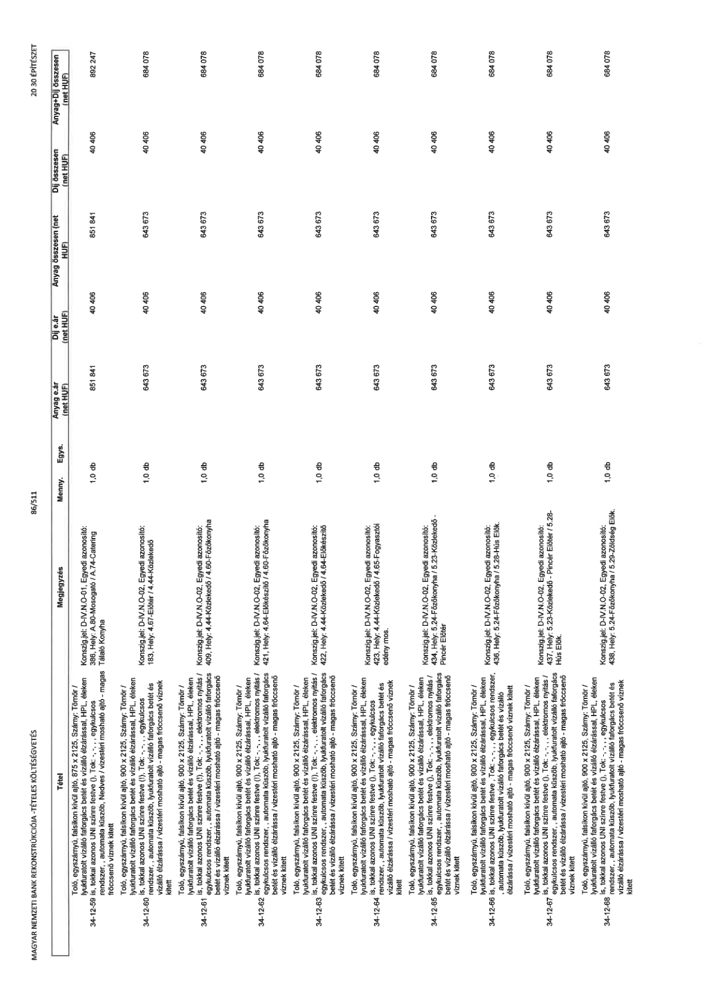

| Tétel | Megjegyzés | Menny. | Egys. | Anyag e.ár (net HUF) | Díj e.ár (net HUF) | Anyag összesen (net HUF) | Díj összesen (net HUF) | Anyag+Díj összesen (net HUF) |
|---|---|---|---|---|---|---|---|---|
| 34-12-59 | Toló, egyszárnyú, falsíkon kívül ajtó, 875 x 2125, Szárny: Tömör / lyukfuratolt vízálló faforgácslap betét és vízálló élzárással, HPL éleken is, tokkal azonos UNI színre festve (), Tok: -, ,, egykulcsos rendszer,, automata küszöb,, Nedves / vízes téri mosható ajtó - magas fröccsenő víznek kitett; Konszign.jel: D-IV.N.O-01, Egyedi azonosító: 386, Hely: A.80-Mosogató / A.74-Catering Tálaló Konyha | 1,0 | db | 851 841 | 40 406 | 851 841 | 40 406 | 892 247 |
| 34-12-60 | Toló, egyszárnyú, falsíkon kívül ajtó, 900 x 2125, Szárny: Tömör / lyukfuratolt vízálló faforgácslap betét és vízálló élzárással, HPL éleken is, tokkal azonos UNI színre festve (!), Tok: -, ,, egykulcsos rendszer,, automata küszöb,, lyukfuratolt vízálló faforgácslap betét és vízálló élzárással / vízes téri mosható ajtó - magas fröccsenő víznek kitett; Konszign.jel: D-IV.N.O-02, Egyedi azonosító: 183, Hely: 4.67-Előtér / 4.44-Közlekedő | 1,0 | db | 643 673 | 40 406 | 643 673 | 40 406 | 684 078 |
| 34-12-61 | Toló, egyszárnyú, falsíkon kívül ajtó, 900 x 2125, Szárny: Tömör / lyukfuratolt vízálló faforgácslap betét és vízálló élzárással, HPL éleken is, tokkal azonos UNI színre festve (!), Tok: -, ,, elektromos nyitás / egykulcsos rendszer,, automata küszöb,, lyukfuratolt vízálló faforgácslap betét és vízálló élzárással / vízes téri mosható ajtó - magas fröccsenő víznek kitett; Konszign.jel: D-IV.N.O-02, Egyedi azonosító: 409, Hely: 4.44-Közlekedő / 4.60-Főzőkonyha | 1,0 | db | 643 673 | 40 406 | 643 673 | 40 406 | 684 078 |
| 34-12-62 | Toló, egyszárnyú, falsíkon kívül ajtó, 900 x 2125, Szárny: Tömör / lyukfuratolt vízálló faforgácslap betét és vízálló élzárással, HPL éleken is, tokkal azonos UNI színre festve (!), Tok: -, ,, elektromos nyitás / egykulcsos rendszer,, automata küszöb,, lyukfuratolt vízálló faforgácslap betét és vízálló élzárással / vízes téri mosható ajtó - magas fröccsenő víznek kitett; Konszign.jel: D-IV.N.O-02, Egyedi azonosító: 421, Hely: 4.64-Előkészítő / 4.60-Főzőkonyha | 1,0 | db | 643 673 | 40 406 | 643 673 | 40 406 | 684 078 |
| 34-12-63 | Toló, egyszárnyú, falsíkon kívül ajtó, 900 x 2125, Szárny: Tömör / lyukfuratolt vízálló faforgácslap betét és vízálló élzárással, HPL éleken is, tokkal azonos UNI színre festve (!), Tok: -, ,, elektromos nyitás / egykulcsos rendszer,, automata küszöb,, lyukfuratolt vízálló faforgácslap betét és vízálló élzárással / vízes téri mosható ajtó - magas fröccsenő víznek kitett; Konszign.jel: D-IV.N.O-02, Egyedi azonosító: 422, Hely: 4.44-Közlekedő / 4.64-Előkészítő | 1,0 | db | 643 673 | 40 406 | 643 673 | 40 406 | 684 078 |
| 34-12-64 | Toló, egyszárnyú, falsíkon kívül ajtó, 900 x 2125, Szárny: Tömör / lyukfuratolt vízálló faforgácslap betét és vízálló élzárással, HPL éleken is, tokkal azonos UNI színre festve (!), Tok: -, ,, egykulcsos rendszer,, automata küszöb,, lyukfuratolt vízálló faforgácslap betét és vízálló élzárással / vízes téri mosható ajtó - magas fröccsenő víznek kitett; Konszign.jel: D-IV.N.O-02, Egyedi azonosító: 423, Hely: 4.44-Közlekedő / 4.65-Fogyasztói edény mos. | 1,0 | db | 643 673 | 40 406 | 643 673 | 40 406 | 684 078 |
| 34-12-65 | Toló, egyszárnyú, falsíkon kívül ajtó, 900 x 2125, Szárny: Tömör / lyukfuratolt vízálló faforgácslap betét és vízálló élzárással, HPL éleken is, tokkal azonos UNI színre festve (!), Tok: -, ,, elektromos nyitás / egykulcsos rendszer,, automata küszöb,, lyukfuratolt vízálló faforgácslap betét és vízálló élzárással / vízes téri mosható ajtó - magas fröccsenő víznek kitett; Konszign.jel: D-IV.N.O-02, Egyedi azonosító: 434, Hely: 5.24-Főzőkonyha / 5.23-Közlekedő - Pincér Előtér | 1,0 | db | 643 673 | 40 406 | 643 673 | 40 406 | 684 078 |
| 34-12-66 | Toló, egyszárnyú, falsíkon kívül ajtó, 900 x 2125, Szárny: Tömör / lyukfuratolt vízálló faforgácslap betét és vízálló élzárással, HPL éleken is, tokkal azonos UNI színre festve (!), Tok: -, ,, egykulcsos rendszer, , automata küszöb,, lyukfuratolt vízálló faforgácslap betét és vízálló élzárással / vízes téri mosható ajtó - magas fröccsenő víznek kitett; Konszign.jel: D-IV.N.O-02, Egyedi azonosító: 436, Hely: 5.24-Főzőkonyha / 5.28-Hús Elők. | 1,0 | db | 643 673 | 40 406 | 643 673 | 40 406 | 684 078 |
| 34-12-67 | Toló, egyszárnyú, falsíkon kívül ajtó, 900 x 2125, Szárny: Tömör / lyukfuratolt vízálló faforgácslap betét és vízálló élzárással, HPL éleken is, tokkal azonos UNI színre festve (!), Tok: -, ,, elektromos nyitás / egykulcsos rendszer,, automata küszöb,, lyukfuratolt vízálló faforgácslap betét és vízálló élzárással / vízes téri mosható ajtó - magas fröccsenő víznek kitett; Konszign.jel: D-IV.N.O-02, Egyedi azonosító: 437, Hely: 5.23-Közlekedő - Pincér Előtér / 5.28-Hús Elők. | 1,0 | db | 643 673 | 40 406 | 643 673 | 40 406 | 684 078 |
| 34-12-68 | Toló, egyszárnyú, falsíkon kívül ajtó, 900 x 2125, Szárny: Tömör / lyukfuratolt vízálló faforgácslap betét és vízálló élzárással, HPL éleken is, tokkal azonos UNI színre festve (!), Tok: -, ,, egykulcsos rendszer,, automata küszöb,, lyukfuratolt vízálló faforgácslap betét és vízálló élzárással / vízes téri mosható ajtó - magas fröccsenő víznek kitett; Konszign.jel: D-IV.N.O-02, Egyedi azonosító: 438, Hely: 5.24-Főzőkonyha / 5.29-Zöldség Elők. | 1,0 | db | 643 673 | 40 406 | 643 673 | 40 406 | 684 078 |
